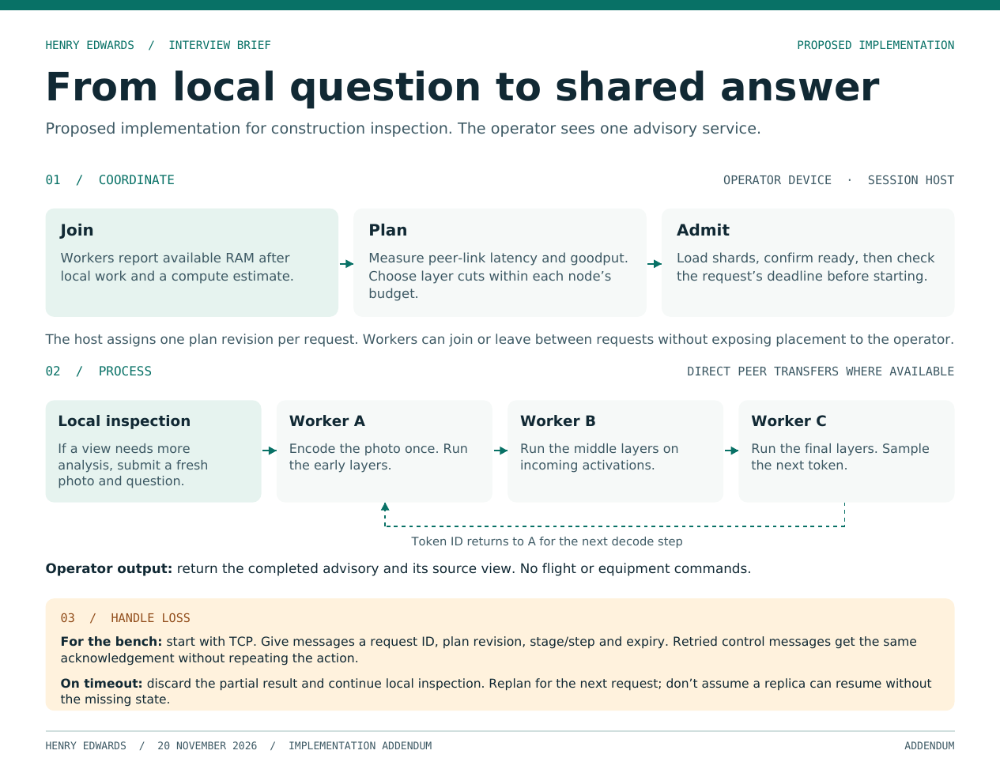
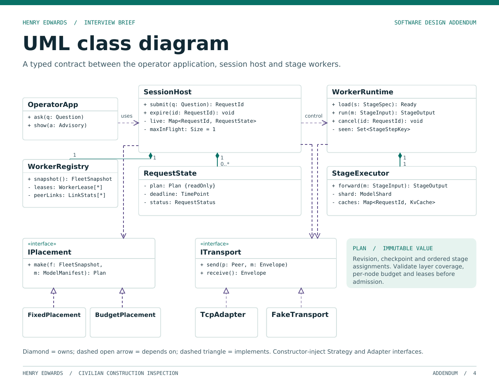
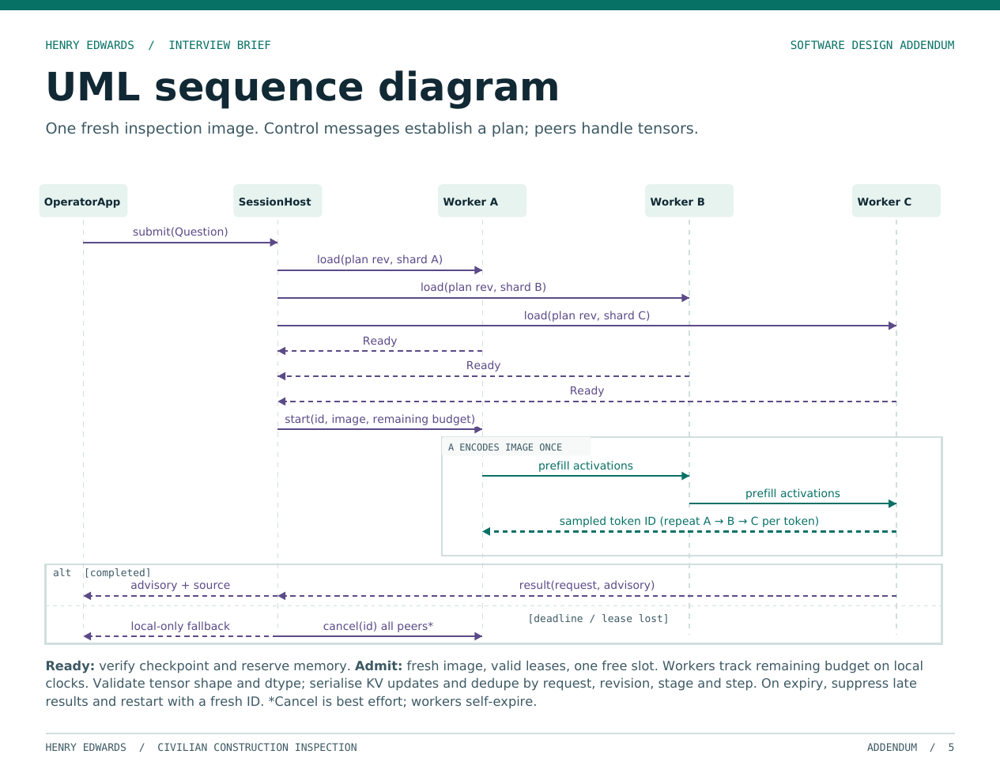

Edge inference / Memory-constrained systems
Can several small computers run a more capable model?
Is memory, rather than perception quality, data or latency, the limiting factor? I started with that hypothesis and compared the smallest workable vision-language model (VLM) with a larger one that could execute in stages. More parameters alone are not a reason to distribute inference.
Measured quality on 200 visual grounding cases
The larger configuration scored 28 percentage points higher on the local RefSpatial-Bench location and placement subset. This is not a full leaderboard score or a controlled estimate of the effect of size: checkpoint, training, precision and runtime differed. Weight size is not peak runtime RAM. No intermediate approximately 4 GB configuration was measured in this comparison; “4B” is a parameter count, not a storage figure.
How the pipeline moves a request
Download the visual engineering brief (PDF) →
The chosen token returns to the first worker for each autoregressive decode step. The model weights stay on their assigned devices; the attention state stays with its corresponding layers. Independent requests can occupy different stages at the same time, but the stages remain sequential for each token. Throughput may improve with overlap; single-request latency need not.
Kafila: Serving Large Language Models on a Trusted Set of Heterogeneous Commodity Machines inspired the capacity-aware placement idea. Its planner jointly weighs memory, compute characteristics and reachability. Its reported results are for commodity-machine LLM fleets, not this VLM or aircraft links.

Proposed software design
The class diagram shows the software ownership boundaries and interfaces. The sequence diagram shows how those objects cooperate during an inspection request. These are design proposals, not evidence of an onboard deployment.


Two different prototype checks
- Correctness of a pretrained split: the 8.876 GB checkpoint ran split across two processes on one laptop GPU with disk offload. 180/180 exact tensor comparisons matched the unsplit reference. This validates the tested split, not a speed improvement.
- Actual overlap: a separate tiny synthetic transformer ran through five concurrent CPU processes with 20/20 exact output matches. Its trace demonstrates overlap across requests, not onboard VLM throughput.
Illustrative construction inspection
Open the interactive three-stage walkthrough →
- Observe. Timestamp photos from three vantage points on a construction site. Ask whether a planned haul road appears obstructed.
- Analyse. Keep lightweight inspection local. Send selected images to the larger model only if the local result is uncertain and the workers have enough compute, memory and connectivity.
- Advise. Show the operator the supporting view, what appears blocked and what remains unverified. The output is an inspection suggestion, never an actuator command.
- Degrade. If a worker or link drops, time out the incomplete request and suppress the advisory. Local operations do not depend on this answer.
For illustration, three workers with 2 GB free each can budget 1.5 GB of weights each for a hypothetical 4.5 GB model, leaving 0.5 GB each for runtime. Fit still requires measured peaks per worker. The measured 8.876 GB checkpoint cannot fit on those three workers even before runtime overhead. No wireless or airborne performance was measured.
Next decision
On a representative inspection set, first compare a local small model using improved prompts, cropping and quantisation with a medium configuration that can fit on one device. Only pursue a larger split if it clears a meaningful task-quality threshold the simpler options miss. On a benchtop, measure per-stage peak RAM, transfers, time to first token, completion latency, deadline misses, and impact on the other workload. Test a wired baseline and link loss before drawing conclusions about wireless use.